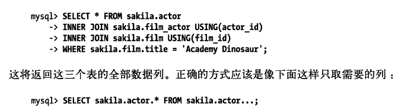
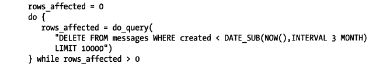
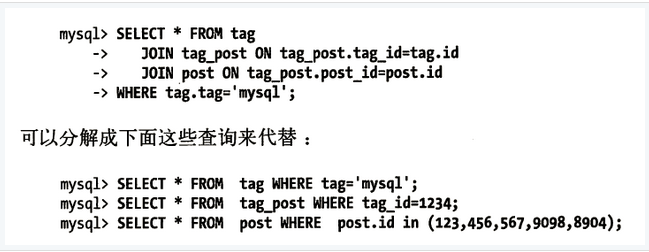
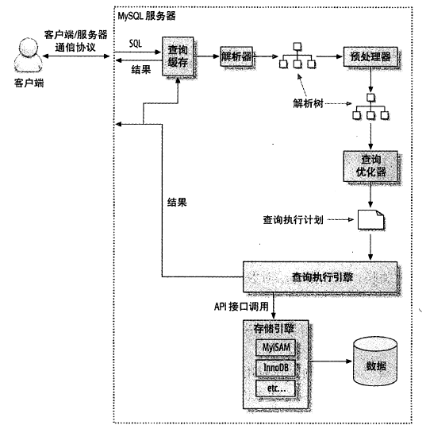
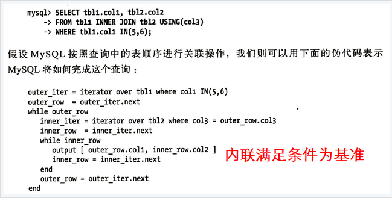
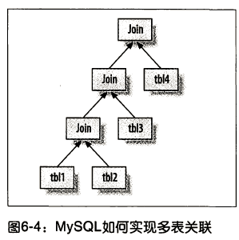

对于高性能数据库操作，只靠设计最优的库表结构、建立最好的索引是不够的，还需要合理的设计查询。如果查询写得很糟糕，即使库表结构再合理、索引再合适，也无法实现高性能。查询优化、索引优化、库表结构优化需要齐头并进，一个不落。
通常来说，查询的生命周期大致可以按照顺序来看：
从客户端>>服务器>>在服务器上进行解析>>生成执行计划>>执行>>返回结果给客户端。
其中执行可以认为是整个生命周期中最重要的阶段，这其中包括了大量为了检索数据到存储引擎的调用以及调用后的数据处理，包括排序、分组等。了解查询的生命周期、清楚查询的时间消耗情况对于优化查询有很大的意义。
查询性能低下的最基本的原因是访问的数据太多。大部分性能低下的查询都可以通过减少访问的数据量的方式进行优化。
请求多余的数据会给MySQL服务器带来额外的负担，并增加网络开销，另外也会消耗应用服务器的CPU内存和资源。这里有一些典型案例：
例如在新闻网站中取出100条记录，但是只是在页面上显示10条。实际上MySQL会查询出全部的结果，客户端的应用程序会接收全部的结果集数据，然后抛弃其中大部分数据。最简单有效的解决方法就是在这样的查询后面加上LIMIT。

每次看到SELECT *的时候都需要怀疑是不是真的需要返回全部的列？取出全部列，会主优化器无法完成索引覆盖扫描这类优化，还会为服务器带来额外的IO、内存和CPU的消耗。
如果应用程序使用了某种缓存机制，或者有其他考虑，获取超过需要的数据也可能有其好处，但不要忘记这样做的代价是什么。获取并缓存所有的列的查询，相比多个独立的只获取部分列的查询可能就更有好处。
不要不断地重复执行相同的查询，然后每次都返回完全相同的数据。当初次查询的时候将这个数据缓存起来，需要的时候从缓存中取出，这样性能显然更好。
对于MySQL，最简单的衡量查询开销的三个指标有：响应时间、扫描的行数、返回的行数。这三个指标都会记录到MySQL的慢日志中，所以检查慢日志记录是找出扫描行数过多的查询的好办法。
响应时间是两个部分之和：服务时间和排队时间，一般常见和重要的等待是IO和锁等待。
分析查询时，查看该查询扫描的行数是非常有帮助的。一定程度上能够说明该查询找到需要的数据的效率高不高。理想的情况下扫描的行数和返回的行数应该是相同的。当然这只是理想情况。一般来说扫描的行数对返回的行数的比率通常很小，一般在1：1到10：1之间。
MySQL有好几种访问方式可以查找并返回一行结果。有些访问方式可能需要扫描很多行才能返回一行结果，也有些访问方式可能无须扫描就能返回结果。
在EXPLAIN语句的TYPE列返回了访问类型。如果查询没有办法找到合适的访问类型，那么解决的最好办法通常就是增加一个合适的索引。索引让MySQL以最高效、扫描行最少的方式找到需要的记录。
一般MySQL能够使用如下三种方式应用WHERE条件，从好到坏依次为：
MySQL内部每秒能够扫描内存中上百万行数据，相比之下，MySQL响应数据给客户端就慢得多了。在其他条件都相同的时候，使用尽可能少的查询当然是更好的。但是有时候，将一个大查询分解为多个小查询也是很有必要的。
有时候对于一个大查询我们需要“分而治之”，对于删除旧数据，如果用一个大的语句一次性完成的话，则可能需要一次性锁住很多数据、占满整个事务日志、耗尽系统资源、阻塞很多小的但重要的查询。
将一个大的DELETE语句切分成多个较小的查询可以尽可能小地影响MySQL性能，同时还可以减少MySQL复制的延迟。例如我们需要每个月运行一次下面的查询：
那么可以用类似下面的办法来完成同样的工作：


乍一看这样做并没有什么好处，但其有如下优势：
1、让缓存的效率更高。对MySQL的查询缓存来说，如果关联中的某个表发生了变化 ，那么就无法使用查询缓存了，而拆分后，如果某个表很少改变，那么该表的查询缓存能重复利用 。
2、将查询后，执行单个查询可以减少锁的竞争。
3、查询性能也有所提升，使用IN（）代替关联查询，可以让MySQL按照ID顺序进行查询，这比随机的关联要更高效。
当希望MySQL能够能更高的性能运行查询时，最好的办法就是弄清楚MySQL是如何优化和执行查询的。

MySQL客户端和服务器之间的通信协议是“半双工”的，在任何一个时刻，要么由服务器向客户端向服务端发送数据，要么是由客户端向服务器发送数据，这两个动作不能同时发生。
一旦客户端发送了请求，它能做的事情就只是等待结果了，如果查询太大，服务端会拒绝接收更多的数据并抛出相应错误，所以参数max_allowed_packet就特别重要。
相反，一般服务器响应给用户的数据通常很多，由多个数据包组成。当服务器开始响应客户端请求时，客户端必须完整地接收整个返回结果，而不能简单地只取前面几条结果，然后主服务器停止发送数据。
这种情况下，客户端若接收完整的结果，然后取前面几条需要的结果，或者接收完几条结果然后粗暴地断开连接，都不是好主意。这也是必要的时候需要在查询中加上limit限制的原因。
换一种方式解释这种行为：当客户端从服务器取数据时，看起来是一个拉数据的过程，但实际上是MySQL在向客户端推数据的过程。客户端不断地接收从服务器推送的数据，客户端也没法让服务器停下来。
当使用多数连接MySQL的库函数从MySQL获取数据时，其结果看起来都像是从MySQL服务器获取数据，而实际上都是从这个库函数的缓存获取数据。
多数情况下这没什么问题，但是如果需要返回一个很大的结果集时，这样做并不好，因为库函数会花很多时间和内存来存储所有的结果集。如果能尽早开始处理这些数据，就能大大减少内在的消耗，这种情况下可以不使用缓存来记录结果而是直接处理。
PHP的 mysql_query()，此时数据已经到了PHP的缓存中，而mysql_unbuffered_query()不会缓存结果。 查询状态：可以使用SHOW FULL PROCESSLIST命令查看查询的执行状态。Sleep、Query、Locked、Analyzing and statistics、Copying to tmp table[on disk]、Sorting result、Sending data
在解析一个查询语句之前，如果查询缓存是打开的，那么MySQL会优先检查这个查询是否命中查询缓存中的数据。这是检查是通过一个对大小写敏感的哈希查找实现的。如果当前的查询恰好命中了查询缓存，那么在返回查询结果之前MySQL会检查一次用户权限。如果权限没有问题，MySQL会跳过执行阶段，直接从缓存中拿到结果并返回给客户端。
查询生命周期的下一步是将一个SQL转换成一个执行计划，MySQL再依照这个执行计划和存储引擎进行交互。这包括多个子阶段：解析SQL、预处理、优化SQL执行计划。
1、语法解析器和预处理首先MySQL通过关键字将SQL语句进行解析，并生成一棵解析树。MySQL解析器将使用MySQL语法规则验证和解析查询。例如是否使用错误的关键字，或者使用关键字的顺序是否正确，引号是否能前后正确匹配等。
2、预处理器则根据一些MySQL规则进一步检查解析树是否合法，例如检查数据表和数据列是否存在，还会解析名字和别名看它们是否有歧义。
3、一下步预处理会验证权限。
一条语句 可以有很多种执行方式，最后都返回相同的结果。优化器的作用就是找到最好的执行计划。MySQL使用基于成本的优化器，它将尝试预测一个查询使用某种执行计划时的成本，并选择其中成本最小的一个。
成本的最小单位是随机读取一个4K的数据页的成本，并加入一些因子来估算某引动操作的代价。可以通过查询当前会话的Last_query_cost的值来得知MySQL计算的当前查询的成本。
这是根据一系列的统计信息计算得来的：每个表或者索引的页面个数、索引的基数（索引中不同值的数量）、索引和数据行的长度、索引分布情况。
当然很多原因会导致MySQL优化器选择错误的执行计划：例如统计信息不准确或执行计划中的成本估算不等同于实际执行的成本。
MySQL对任何关联都执行嵌套循环关联操作，即MySQL先在一个表中循环取出单条数据，然后再嵌套循环到一个表中寻找匹配的行，依次下去直到找到的有匹配的行为止。然后根据各个表匹配的行，返回查询中需要的各个列。（嵌套循环关联）

MySQL生成查询的一棵指令树，然后通过存储引擎执行完成这棵指令树并返回结果。最终的执行计划包含了重构查询的全部信息。如果对某个查询执行EXPLAIN EXTENDED，再执行SHOW WARNINGS，就可以看到重构出的查询。 MySQL的执行计划是一棵左侧深度优先的树。

不过，如果有超过n个表的关联，那么需要检查n的阶乘种关联顺序。我们称之为所有可能的执行计划的“搜索空间”。实际上，当需要关联的表超过optimizer_search_depth的限制的时候，就会选择“贪婪”搜索模式。
无论如何排序都是一个成本很高的操作，所以从性能角度考虑，应尽可能避免排序或者尽可能避免对大量数据进行排序。如果需要排序的数据量小于排序缓冲区，MySQL使用内存进行“快速排序”操作。
如果内存不够排序，那么MySQL会先将数据分块，对每个独立的块使用“快速排序”进行排序，并将各个块的排序结果存放在磁盘上，然后将各个排序的块进行合并，最手返回排序结果。
两次传输排序（旧版），读取行指针和需要排序的字段，对其进行排序，然后再根据排序结果读取所需要的数据行。显然是两次传输，特别是读取排序后的数据时（第二次）大量随机I/O，所以两次传输成本高。
单次传输排序（新版），一次读取出所有需要的或SQL查询指定的列，然后根据排序列，排序，直接返回排序后的结果。顺序I/O，缺点：如果列多，额外占用空间。
MySQL在进行文件排序时需要使用的临时存储空间可能会比想象的要大得多，因为MySQL在排序时，对每一个排序记录都会分配一个足够长的定长空间来存放。这个定长空间必须足够以容纳其中最长的字符串。
在关联查询的时候如果需要排序，MySQL会分两种情况来处理这样的文件排序。如果ORDER BY子句的所有列都来自关联的第一个表，那么MySQL在关联处理第一个表时就进行文件排序。
如果是这样那么在MySQL的EXPLAIN结果中可以看到Extra字段会有Using filesort。除此之外的所有情况，MySQL都会将关联的结果存放在一个临时表中，然后在所有的关联都结束后，再进行文件排序。
这种情况下Extra字段可以看到Using temporary;Using filesort。如果查询中有LIMIT的话，LIMIT也会在排序之后应用，所以即使需要返回较少的数据，临时表和需要排序的数据量仍然会非常大。
相对于查询优化，查询执行简单些了，MySQL只根据执行计划输出的指令逐步执行。指令都是调用存储引擎的API来完成，一般称为 handler API，实际上，MySQL优化阶段为每个表都创建了一个 handler 实例，用 handler 实例获取表的相关信息（列名、索引统计信息等）。
存储引擎接口有着非常丰富的功能，但是底层接口却只有几十个，这些接口像搭积木一样能够完成查询的大部分操作。例如，有一个查询某个索引的第一行的接口，再有一个查询某个索引条件的下一条目的功能，有了这两个功能就可以完成全索引扫描操作。
查询执行的最后一个阶段就是将结果返回给客户端。即使查询不需要返回结果集给客户端，MySQL仍然会返回这个查询的一些信息，例如该查询影响到的行数。
MySQL将结果集返回客户端是一个增量、逐步返回的过程。一旦服务器处理完最后一个关联表，开始生成第一条结果时，MySQL就可以开始向客户端逐步返回结果集了。
这样处理有两个好处：服务端无须存储太多的结果，也就不会因为要返回太多结果而消耗太多内存。另外，这样的处理也让MySQL客户端第一时间获得返回的结果。